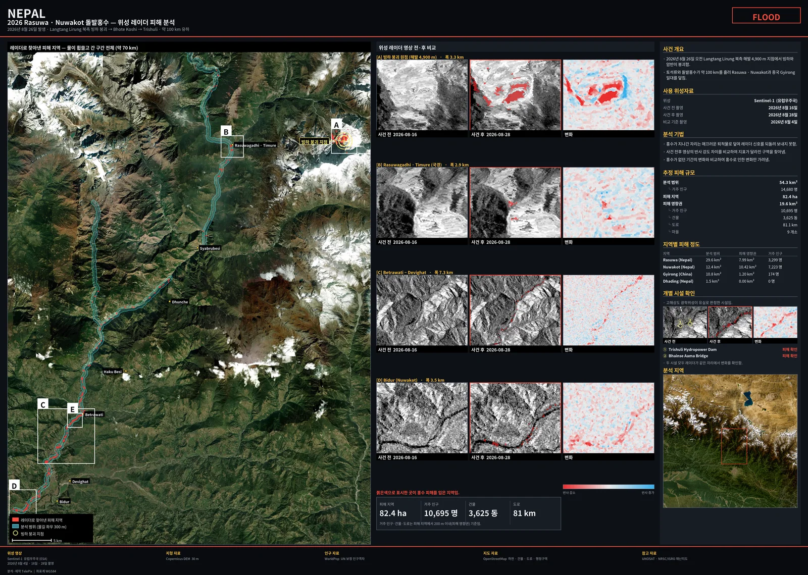
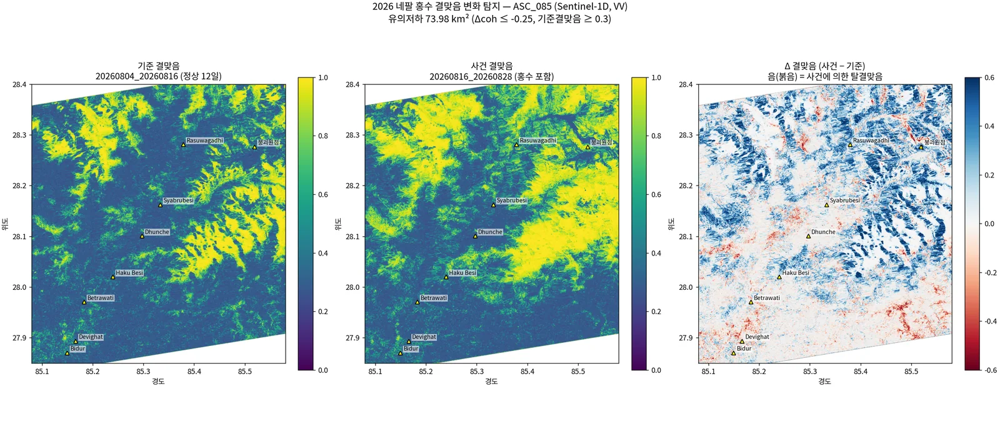
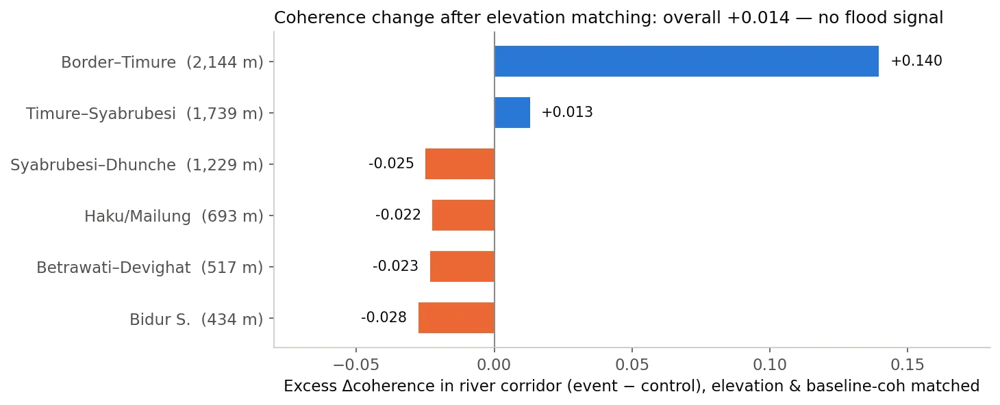
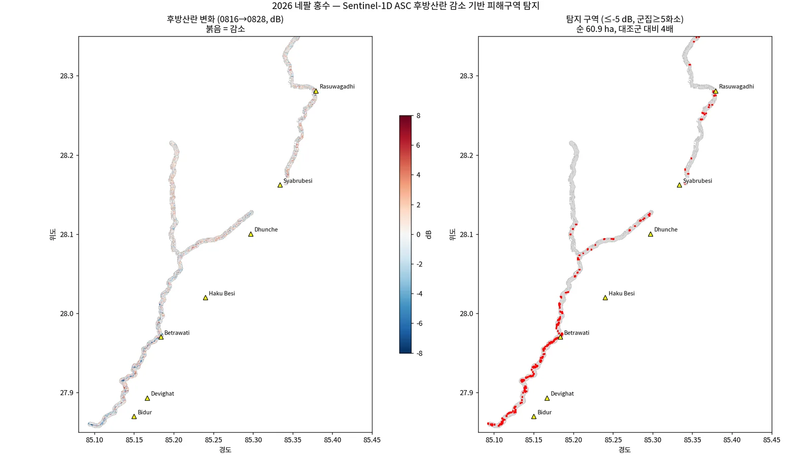
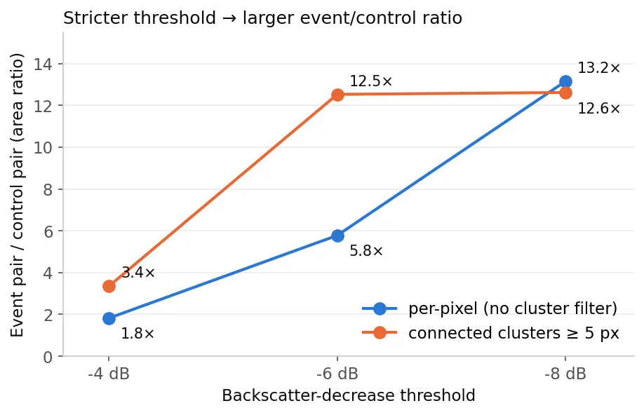
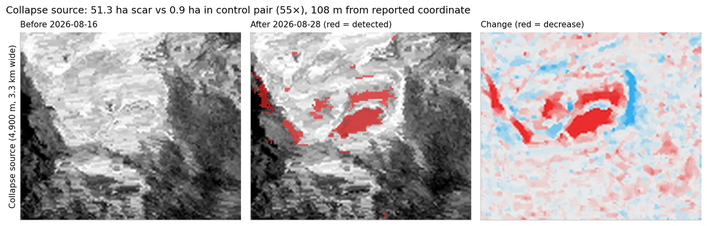
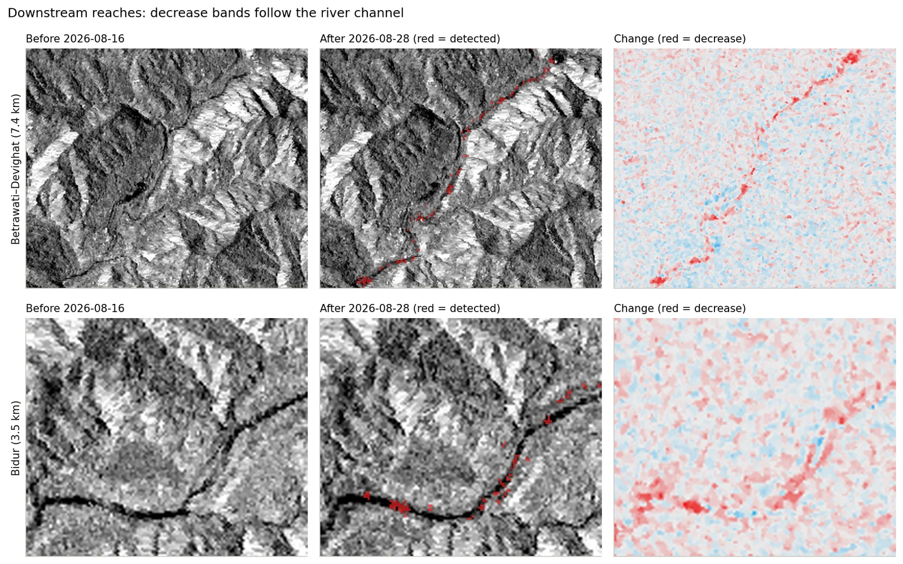
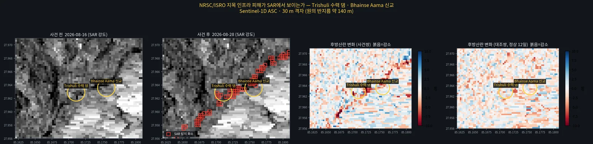

2026 네팔 라수와 빙하붕괴 돌발홍수 — Sentinel-1 SAR 피해 분석2026 Rasuwa (Nepal) Glacier-Collapse Flash Flood — Sentinel-1 SAR Damage Analysis
2026-08-26 네팔 라수와 빙하붕괴 돌발홍수를 사건 4일 뒤 Sentinel-1D SLC 버스트로 분석했다. C밴드 결맞음 변화로는 홍수를 분리하지 못했고(고도 교란, 매칭 후 초과 Δcoh +0.014), 후방산란 강임계 + 대조쌍 방식으로 하류 피해 31.7 ha(대조 대비 12.5배)와 붕괴 원점 흔적 51.3 ha(55배, 보고 좌표와 108 m)를 탐지했다.Analysed the 26 Aug 2026 glacier-collapse flash flood in Rasuwa, Nepal, four days after the event, using Sentinel-1D SLC bursts. C-band coherence change could not isolate the flood (elevation confound; matched excess Δcoh +0.014), but a strict backscatter-decrease threshold with a control pair detected 31.7 ha of downstream damage (12.5× the control) and a 51.3 ha scar at the collapse source (55×, 108 m from the reported coordinate).
배경 · 목표Background
- 2026-08-26 Langtang Lirung 북측 해발 약 4,900 m에서 빙하·암반이 붕괴해 Lende Khola → Bhote Koshi → Trishuli 강을 따라 약 100 km 돌발홍수가 발생했다.
- 2026년 히말라야권은 Sentinel-1D 단독 운용(12일 주기)이고, ASF에는 S1D 풀 SLC가 없어 SLC-BURST(Earthdata)로만 받을 수 있었다. 사건 이후 영상은 상승 085궤도 2026-08-28(T+2.4일) 한 장뿐이었다.
- 목표는 공개 위성자료만으로 피해 위치·규모를 빠르게 추정하는 것이었다.
- On 26 Aug 2026 ice and rock collapsed at ~4,900 m north of Langtang Lirung, sending a flash flood ~100 km down the Lende Khola, Bhote Koshi and Trishuli rivers.
- In 2026 the Himalaya is covered by Sentinel-1D alone (12-day repeat), and ASF has no full S1D SLC, only SLC-BURST (Earthdata). The only post-event acquisition was ascending track 085 on 2026-08-28 (T+2.4 days).
- The goal was a fast estimate of damage location and extent from open satellite data only.
방법Method
- 데이터: ASF SLC-BURST 38개(5.1 GB, VV/VH) → burst2safe로 SAFE 재조립. 상승 085(IW2) 08-04·08-16·08-28. 하강 019·121은 스택 설정까지만(사후 영상 미취득 시점).
- ISCE2 2.6.3이 S1D를 거부 → 절대궤도→상대궤도 실측 7건으로 오프셋 42를 역산해 패치(175개 후보 중 유일해).
- topsStack 27룩(방위 3 × 거리 9)으로 기준쌍(08-04→08-16, 홍수 전 정상 12일)과 사건쌍(08-16→08-28) 결맞음을 만들고 Δcoh 계산 → 하천 회랑 vs 대조군을 고도+기준결맞음 2차원 매칭으로 비교.
- 후방산란: 날짜별 멀티룩 강도(dB)를 지오코딩 → 하천(OSM) 좌우 300 m 안에서 사건쌍 dB 감소 ≤ 임계 & 연결성분 ≥ N화소 → 같은 절차를 기준쌍에 적용한 면적을 오탐으로 보고 차감. 레이오버·그림자 경사면은 DEM 경사·사면방향으로 제외.
- 붕괴 원점(하천 버퍼 밖)은 보고 좌표 주변 10.7 km² 박스에 같은 기준을 별도 적용. WorldPop 2020·OSM 건물/도로로 노출 집계, 공개 재난지도(NRSC/ISRO)가 지목한 시설 2곳과 위치 대조.
- Data: 38 ASF SLC-BURST files (5.1 GB, VV/VH) re-assembled into SAFE with burst2safe. Ascending 085 (IW2): 08-04, 08-16, 08-28. Descending 019 and 121 were only set up (post-event scenes not yet acquired).
- ISCE2 2.6.3 rejects S1D; patched with an orbit offset of 42 back-solved from 7 absolute→relative orbit pairs (the unique solution among 175 candidates).
- topsStack at 27 looks (3 az × 9 rg): control pair (08-04→08-16, normal 12 days before the flood) and event pair (08-16→08-28) coherence, Δcoh, then river corridor vs control compared after 2-D matching on elevation and baseline coherence.
- Backscatter: geocoded multilooked intensity (dB) per date; inside ±300 m of OSM rivers, event-pair decrease ≤ threshold and connected cluster ≥ N px; the same procedure on the control pair is treated as false alarms and subtracted. Layover/shadow slopes removed using DEM slope and aspect.
- The collapse source (outside the river buffer) was tested separately in a 10.7 km² box around the reported coordinate. Exposure from WorldPop 2020 and OSM buildings/roads; two facilities flagged by a public disaster map (NRSC/ISRO) were checked against SAR change.
결과Results
- 결맞음 변화: 실패. Δcoh 지도의 지배 패턴은 홍수가 아닌 고도(고산부 적설 조건 변화로 사건쌍에서 결맞음 급증). 매칭 전 회랑 −0.081은 전부 고도 교란이었고, 고도+기준결맞음 매칭 후 회랑 초과 Δcoh는 +0.014(신호 없음).
- Otsu 분할: 실패. 변화 임계 −0.12 dB, 사건쌍 22.3 km² vs 기준쌍 22.7 km²(오탐률 102%). 피해 구역은 분포의 두 번째 봉우리가 아니라 극단 꼬리라 Otsu가 본체를 이등분할 뿐이었다.
- 후방산란 강임계(−6 dB, 군집 ≥5화소): 사건쌍 31.7 ha(37군집) vs 기준쌍 2.5 ha(4군집) = 12.5배, 오탐률 8%. 화소 단위로는 −4 → −6 → −8 dB에서 1.8 → 5.8 → 13.2배로 단조 증가(실신호의 서명).
- 완화 기준(−5 dB, 3화소): 82.4 ha vs 21.5 ha = 3.8배, 오탐 26%. 구간별로 Betrawati~Devighat·Bidur에 집중, Timure~Syabrubesi 상류 협곡은 대조와 구분 불가.
- 붕괴 원점: 51.3 ha vs 대조 0.9 ha = 55배(−8 dB에서 33.2 vs 0.3 ha, 131배). 최대 군집 20.3 ha·평균 −11.3 dB, 중심이 보고 좌표에서 108 m.
- 시설 대조: 공개 재난지도가 '유실'로 지목한 수력 댐·신교 지점에서 최근접 탐지 화소 32 m / 79 m, 사건쌍 최저 −10.9 / −7.4 dB(기준쌍 −5.3 / −4.7 dB).
- Coherence change: failed. The dominant Δcoh pattern is elevation (snow-condition change at altitude raised event-pair coherence), not the flood. The corridor's −0.081 before matching was entirely elevation confound; after elevation + baseline-coherence matching the excess was +0.014 (no signal).
- Otsu segmentation: failed. Change threshold −0.12 dB; event 22.3 km² vs control 22.7 km² (false-alarm rate 102%). Damage is an extreme tail, not a second mode, so Otsu just bisects the bulk.
- Strict backscatter threshold (−6 dB, clusters ≥ 5 px): event 31.7 ha (37 clusters) vs control 2.5 ha (4) = 12.5×, false-alarm rate 8%. Per pixel the ratio rises monotonically 1.8 → 5.8 → 13.2× from −4 to −8 dB — the signature of a real signal.
- Relaxed setting (−5 dB, 3 px): 82.4 vs 21.5 ha = 3.8×, 26% false alarms. Detections concentrate at Betrawati–Devighat and Bidur; the upstream Timure–Syabrubesi gorge cannot be separated from the control.
- Collapse source: 51.3 ha vs 0.9 ha control = 55× (at −8 dB 33.2 vs 0.3 ha, 131×). Largest cluster 20.3 ha, mean −11.3 dB, centroid 108 m from the reported coordinate.
- Facility check: at the hydropower dam and new bridge reported as washed away by a public disaster map, the nearest detected pixels are 32 m / 79 m away, event-pair minima −10.9 / −7.4 dB (control −5.3 / −4.7 dB).








배운 점 · 한계What I learned · Limitations
- 몬순기 협곡의 12일 기준 결맞음이 약 0.30으로 이미 바닥이라, C밴드 결맞음 '저하'를 볼 동적 범위 자체가 없었다. 산악지 Δcoh 대조군은 반드시 고도 매칭해야 한다.
- 물이 빠진 뒤(T+2.4일)에는 '물=어두움'이 아니라 신생 퇴적·세굴면의 경면반사에 의한 후방산란 급감을 잡아야 한다. 희소한 극단 꼬리는 Otsu가 아니라 고정 강임계 + 대조쌍 보정이 맞다.
- 한계: 감소만 세서 과소추정 — 분석 범위(레이오버·그림자 제외 46.9 km²)에서 ±2 dB 순증가 1.78 km²가 순감소 0.99 km²보다 컸다(거친 토석 퇴적·젖은 표면). 양방향(|Δ| ≥ 5 dB, 3화소)으로 바꾸면 82.4 → 136.5 ha(대조 38.0 ha, 3.6배).
- 한계: 30 m 격자에서 개별 교량·댐은 분해 불가 — '해당 지점이 크게 변했다'까지만 말할 수 있다. 보도상 최대 피해지인 상류 협곡은 레이오버·그림자로 관측 불가였다(피해가 적어서가 아님).
- 공개 광학 기반 홍수범위(약 11 km²)와 SAR 순변화(약 3 km²)의 차이는 대부분 '색은 바뀌었지만 cm 규모 거칠기는 그대로'인 표면으로 해석 — 광학과 SAR가 보는 물리량이 다르다.
- 결맞음은 27룩이 필수였다. 4룩에서는 결맞음 편향·진폭 잡음(σ ≈ 3.75 dB)으로 결론을 낼 수 없었다. ISCE2의 S1D 미지원은 궤도 오프셋 42 패치로 해결.
- Monsoon-season 12-day baseline coherence in the gorge was ~0.30, already near the floor, so there was no dynamic range left to see a C-band coherence drop. In mountains, Δcoh controls must be elevation-matched.
- After the water has gone (T+2.4 days) the target is not 'dark water' but the backscatter drop from specular new deposits and scoured surfaces. A rare extreme tail needs a fixed strict threshold with a control pair, not Otsu.
- Limitation: counting only decreases underestimates damage — in the 46.9 km² analysis area (layover/shadow removed) the net increase at ±2 dB (1.78 km², rough debris and wet surfaces) exceeded the net decrease (0.99 km²). Counting both directions (|Δ| ≥ 5 dB, 3 px) raises 82.4 ha to 136.5 ha (control 38.0 ha, 3.6×).
- Limitation: a 30 m grid cannot resolve individual bridges or dams — only 'this spot changed strongly' can be claimed. The upstream gorge, reported as worst hit, was not observable because of layover and shadow, not because damage was small.
- The gap between a public optical flood extent (~11 km²) and the SAR net change (~3 km²) is mostly surfaces whose colour changed but whose cm-scale roughness did not — optical and SAR sense different physics.
- Coherence needs 27 looks; at 4 looks the coherence bias and amplitude noise (σ ≈ 3.75 dB) made any conclusion impossible. ISCE2's missing S1D support was fixed with an orbit-offset-42 patch.
관련 코드Code
저장소는 센서 → 위성 → 기법 순으로 정리돼 있고, 각 폴더에 입력·출력 표가 있습니다.The repository is organised by sensor, satellite and technique; each folder documents its inputs and outputs.
산출물Deliverables
- Sentinel-1D 3시기 topsStack(27룩) 결맞음·dB 지오코딩 산출물
- 탐지 마스크(하류·붕괴원점)·대조 마스크 GeoTIFF + 요약 JSON
- 노출 집계(인구·건물·도로·행정구역별)
- 결과 요약 인포그래픽(가로형, 13차 개정)
- Three-date Sentinel-1D topsStack (27 looks) coherence and geocoded dB
- Detection masks (downstream, collapse source) and control masks as GeoTIFF with JSON summaries
- Exposure tallies (population, buildings, roads, by district)
- Summary infographic (landscape, 13th revision)
원본 보고서와 발표자료는 사내 자료로 공개하지 않습니다. 분석 코드는 GitHub에 정리되어 있습니다.Source reports and decks are internal and not published here. Analysis code is organised on GitHub.